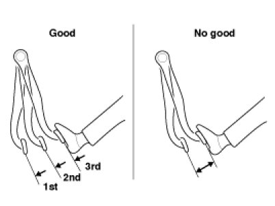
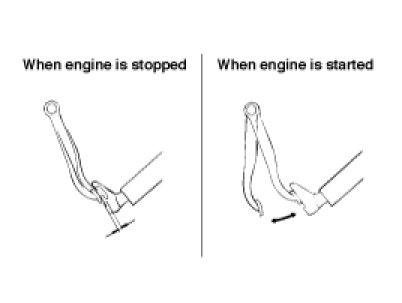
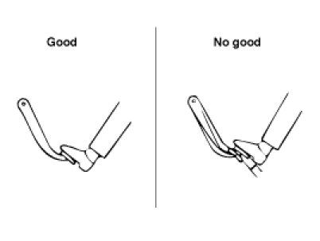
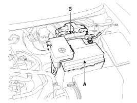
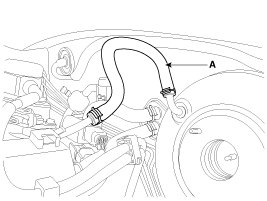
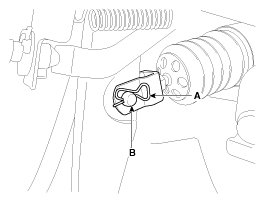
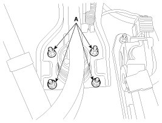

Repair Procedures
Brake Booster Operating Test
For simple checking of the brake booster operation, carry out the following tests.
1. Run the engine for one or two minutes, and then stop it. If the pedal depresses fully the first time but gradually becomes higher when depressed succeeding times, the booster is operating properly, if the pedal height remains unchanged, the booster is inoperative.

2. With the engine stopped, step on the brake pedal several times.
Then step on the brake pedal and start the engine. If the pedal moves downward slightly, the booster is in good condition. If there is no change, the booster is inoperative.

3. With the engine running, step on the brake pedal and then stop the engine.Hold the pedal depressed for 30 seconds. If the pedal height does not change, the booster is in good condition, if the pedal rises, the booster is inoperative.
If the above three tests are okay, the booster performance can be determined as good.
Even if one of the above three tests is not okay, check the check valve, vacuum hose and booster for malfunction.

Removal
1. Turn ignition switch OFF and disconnect the negative (-) battery cable.
2. Remove the battery (A) and ECM (B).

3. Remove the master cylinder.
4. Disconnect the vacuum hose (A) from the brake booster.

5. Remove the snap pin (A) and clevis pin (B).

6. Remove the mounting nuts (A).
Tightening torque:
16.7 - 25.5 N.m (1.7 - 2.6 kgf.m, 12.3 - 18.8 lb-ft)

7. Remove the brake booster.
Inspection
1. Inspect the check valve in the vacuum hose.
CAUTION:
Do not remove the check valve from the vacuum hose.
2. Check the boot for damage.
Installation
1. Installation is the reverse of removal.
CAUTION:
- Before installing the pin, apply the grease to the joint pin.
- Use a new snap pin whenever installing.
2. Adjust the brake pedal height and free play.